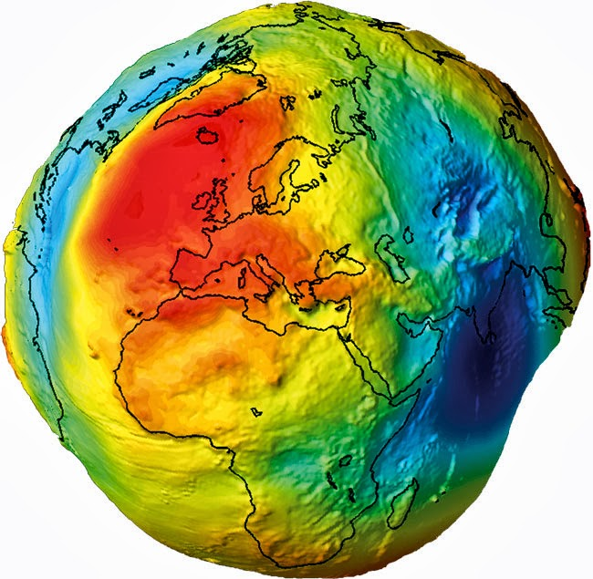
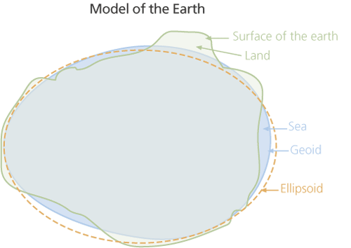
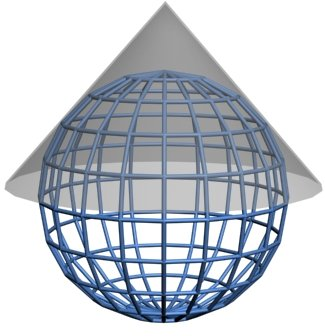
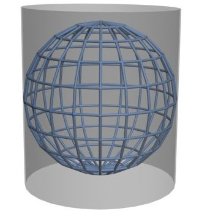
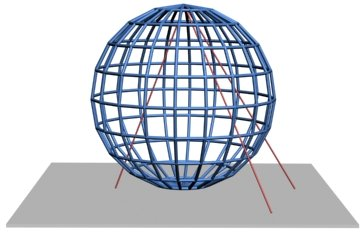

Wat is geo-informatie?
Wat is geo-informatie? En hoe wordt geo-informatie precies opgeslagen? Hoe worden coördinaten precies opgeslagen? Dit behandelen we allemaal op deze pagina.
De kracht van geo-informatie
Wat kun je precies met geo-informatie, ook wel ruimtelijke informatie genoemd? Geodata is overal om ons heen. Er wordt ook wel gezegd dat 80% van alle data over een plek op aarde gaat.
Data met geolocatie wordt op veel terreinen toegepast. Enkele voorbeelden:
Stedelijke planning
Gemeenten gebruiken geodata bij het plannen van nieuwe woonwijken. Hierbij spelen factoren zoals bodemgesteldheid, nabijheid van voorzieningen, verkeersstromen, waterafvoer en eigendom van percelen een belangrijke rol. Voor deze analyses worden onder andere topografische kaarten (wegen, gebouwen), kadastrale gegevens (perceelgrenzen) en 3D-modellen (hoogte-informatie) gebruikt.
Leefomgeving en milieu
Luchtkwaliteit en het voorkomen van geluidsoverlast zijn cruciale aspecten van de stedelijke leefomgeving. Analyses helpen probleemlocaties te signaleren en maatregelen te treffen. De geolocatie van sensoren in relatie tot landschap, bebouwing en infrastructuur is hierbij essentieel.
Logistiek en dienstverlening
Voor de distributie van pakketten of het ophalen van huisvuil is het optimaal plannen van routes belangrijk om brandstof, tijd en kosten te besparen. Hiervoor zijn gegevens nodig zoals het wegennet (wegen, verkeersintensiteit), realtime verkeersinformatie en de geolocatie van ophaal- en bezorgpunten.
Hulpdiensten en risicobeheer
Geoinformatie is onmisbaar voor hulpdiensten, bijvoorbeeld om risicogebieden en bijzondere locaties in kaart te brengen. Hoogtekaarten zijn belangrijk voor het inschatten van overstromingsrisico’s, en basisregistraties geven inzicht in locaties van scholen of congrescentra. Daarnaast biedt PDOK (Inspire) datasets met specifieke risicogebieden.
Vraag
Welke andere toepassingen van geo-informatie ken jij? Schrijf een aantal voorbeelden op.
Basisregistraties
Veel van de datasets bij PDOK zijn een basisregistratie. Wat is een basisregistratie precies?
Een basisregistratie is een officiële, landelijke registratie waarin gegevens worden vastgelegd die door veel overheidsorganisaties gebruikt worden. Zie het als een gezamenlijke set van centrale gegevens: één plek waar betrouwbare, actuele en uniforme gegevens staan, zodat iedereen dezelfde informatie gebruikt.
Kenmerken van een basisregistratie
- Authentieke gegevens: De informatie is juridisch vastgesteld en mag niet zomaar worden aangepast.
- Uniform gebruik: Overheden en organisaties moeten deze gegevens gebruiken in hun processen.
- Actueel en betrouwbaar: Er gelden strenge regels voor bijhouding en kwaliteit.
We kennen de volgende basisregistraties zonder geoinformatie:
- BRP – Basisregistratie personen
- HR – Handelsregister
- BRV – Basisregistratie Voertuigen (kentekenregister)
- BRI – Basisregistratie Inkomen
en de volgende basisregistraties met geodata waarvan PDOK (gedeeltelijk) data uitlevert:
- BRT – Basisregistratie Topografie
- BRK – Basisregistratie Kadaster
- WOZ – Basisregistratie Waarde Onroerende Zaken
- BAG – Basisregistratie Adressen en Gebouwen
- BGT – Basisregistratie Grootschalige Topografie
- BRO – Basisregistratie Ondergrond
Waarom is dit belangrijk?
Stel je voor dat elke overheidsorganisatie zijn eigen adressenlijst zou bijhouden. Dan krijg je fouten, bijvoorbeeld het aanvragen van een stroomaansluitingen bij verhuizingen, met dubbele gegevens en veel verwarring tot gevolg. Door één landelijke basisregistratie te gebruiken, werken alle partijen met dezelfde informatie. Dat bespaart tijd, voorkomt fouten en maakt samenwerking makkelijker.
Hier vind je meer informatie over het stelsel van basisregistraties.
Hoe wordt geodata opgeslagen?
Geodata kan op verschillende manieren worden opgeslagen in een bestand of database. Op welke manier dat is, heeft ook gevolgen voor wat je precies met de data kunt doen. Dit is zeker bij ruimtelijke data het geval, omdat geometrie op heel veel verschillende manier gerepresenteerd kan worden. Dit is heel erg afhankelijk van de beoogde toepassing van de data.
Raster- of vectordata?
Er worden ruwweg twee vormen van geodata onderscheiden: vectordata en rasterdata. In het geval van rasterdata wordt de informatie opgeslagen in een afbeelding. Een rasterbestand bestaat uit een vlakdekkend grid. Een rasterbestand is samengesteld uit één of meerdere banden. Elke rastercel ("pixel") in elke band heeft een numerieke waarde. Samen kunnen deze waardes een kleur voorstellen, bijvoorbeeld in een luchtfoto of satellietbeeld. Er is dan een band voor Rood, een band voor Groen en een band voor Blauw (RGB). Maar de waardes in enkelbands rasterbestanden kunnen ook iets anders voorstellen, zoals hoogte of temperatuur.
Vectordata gebruikt een totaal andere benadering om geodata op te slaan. In het geval van vectordata wordt de informatie opgeslagen in een tabel met een geometrie. De geometrie kan opgeslagen worden als verzameling coördinaten in een attribuut in een tabel (met een eigen datatype geometrie). De geometrie kan een punt, lijn of vlak zijn.
Rasterdata en vectordata hebben door de specifieke manier waarop data wordt opgeslagen verschillende voor- en nadelen ten opzichte van elkaar. Daardoor kennen raster- en vectordata hun eigen toepassingsgebieden.
Over het algemeen (er zijn uitzonderingen mogelijk) wordt rasterdata gebruikt voor continu fenomenen, zoals hoogte en temperatuur. Dit soort natuurlijke fenomenen heeft geen harde grenzen en loopt continu door. Dit in tegenstelling tot discrete informatie, zoals gebouwen en administratieve grenzen. Die beginnen en eindigen op posities die wij als mensen hebben aangewezen. Voor discrete fenomenen gebruiken we dan ook vooral vectordata.
TO DO
Afbeelding toevoegen
Voorbeelden van rasterdatasets bij PDOK zijn:
- Algemeen Hoogtebestand Nederland (AHN) voor hoogtedata
- Landelijk Grondgebruik Nederland
- Luchtfoto RGB en Luchtfoto Infrarood
Voorbeelden van vectordatasets bij PDOK zijn:
- De BRT Achtergrondkaart
- De Basisregistratie Adressen en Gebouwen (BAG) voor onder andere gebouwen
- CBS Wijken en Buurten voor statistische gegevens over buurten, wijken en gemeenten
Wat zijn coördinaatreferentiesystemen?
TO DO
Geodata is altijd opgeslagen in een bepaald coördinaatreferentiesysteem (CRS). Het coördinaatreferentiesysteem bepaalt hoe de coördinaten worden opgeslagen. Oftewel: hoe de positie op aarde bepaald wordt. De aarde is niet plat hoewel kaarten dat wel zijn. Helaas is de aarde ook niet perfect rond of ovaal.

De aarde lijkt meer op een aardappel, met bergen en valleien. We noemen dit een geoïde. Helaas is die geoïde eindeloos complex, wat het lastig maakt om de exacte vorm in een computer op te slaan. Daarom wordt geprobeerd om de vorm van de geoïde te benaderen met een ellipsoïde (3D ovaal). Dat leidt echter wel tot afwijkingen: de ene plek zal meer afwijken van de ellipsoïde dan de andere plek. Maar voor veel toepassingen op wereldwijde schaal is enige afwijking niet zo erg.

Voor veel toepassingen is nauwkeurigheid wel belangrijk. Je hebt dan een ellipsoïde nodig die goed aansluit op het stukje aarde waarin je geïnteresseerd bent. Op andere plekken op de aarde zal die ellipsoïde totaal niet aansluiten. We noemen dat ook wel een lokaal coördinatenstelsel. Het Rijksdriehoeksstelsel, ook wel "RD Amersfoort" genoemd, is zo'n lokaal coördinatenstelsel. RD Amersfoort biedt hoge nauwkeurigheid in Nederland. Buiten Nederland is het echter nutteloos.
We zijn er nog niet helemaal. Wat als je zo'n ellipsoïde op een plat vlak probeert te projecteren? Stel je voor dat je een mandarijn pelt en de schil in één stuk hebt. Als je die op een plat vlak legt, ontstaan er gaten. Kaartprojecties zijn manieren om de aardbol zodanig te vervormen en uit te rekken, dat die gaten worden opgevuld. Daar zijn veel verschillende manieren voor.



Over het algemeen onderscheiden we drie soorten kaartprojecties:
- Hoekgetrouw
- Oppervlaktegetrouw
- Afstandsgetrouw
Vaak gaan projecties en coördinaatstelsels hand in hand. Ze zijn echter wel twee verschillende dingen. Coördinatenstelsels zijn vooral belangrijk voor de correcte opslag van geodata. Projecties zijn vooral belangrijk voor de correcte visualisatie van geodata.
Dit zijn de meest relevante coördinaatreferentiesystemen:
- WGS84 is vooral geschikt voor wereldwijde datasets. Het is ook wel bekend als 'lat-long' en is het coördinaatreferentiesysteem dat voor GPS wordt gebruikt. Het is waarschijnlijk het meest bekende en meest gebruikte CRS.
- ETRS89 is het officiële Europese CRS.
- RD New / Amersfoort is het officiële Nederlandse coördinaatreferentiesysteem. Het gebruikt meters als eenheid voor de X- en Y-coördinaten.
En dit zijn de bekendste kaartprojecties:
- UTM
- Web Mercator ook wel bekend als 'Pseudo-Mercator'
Zie ook https://www.nsgi.nl/coordinatenstelsels-en-transformaties/overzicht-coordinatenstelsels